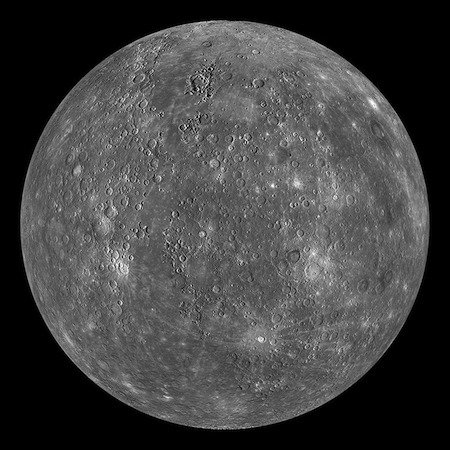

Mercury is the closest planet to the Sun and the smallest planet in our solar system.
Mercury — the smallest planet in our solar system and nearest to the Sun — is only slightly larger than Earth's Moon. Its surface is covered in tens of thousands of impact craters. From the surface of Mercury, the Sun would appear more than three times as large as it does when viewed from Earth, and the sunlight would be as much as 11 times brighter. Despite its proximity to the Sun, Mercury is not the hottest planet in our solar system— that title belongs to nearby Venus, thanks to its dense atmosphere. But Mercury is the fastest planet, zipping around the Sun every 88 Earth days. Mercury is appropriately named for the swiftest of the ancient Roman gods.
